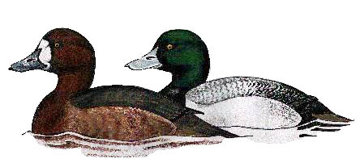

Scaup
An unusual winter visitor to the reservoir.

No records prior to 1955
06/11/55 - 5 birds (inc. 2 males)
08/12/55 - 4 birds (inc. 2 males)
04/03/56 - Single male
18/11/56 - 4 birds (inc. 2 males)
02/12/56 - Single female
15/01/61 - Single male. Seen again on 12/02 & 2 males were present on 29/01
04/04/61 - Single female
12/12/61 - Single female
13/12/65 - Single male. Seen again on 31/12
16/01/66 - Single male
28/12/73 - Single male. Remained until 31/12
23/02/80 - Single male
06/01/95 - Single 1st winter male. Remained until 09/01
28/01/96 - Single female
21/10/01 - Single female
15/12/01 - Single female. Also single females on 23/12, 25/12 and 30/12
25/11/25 - 2 males and a female paid a surprise visit this day (DWH)